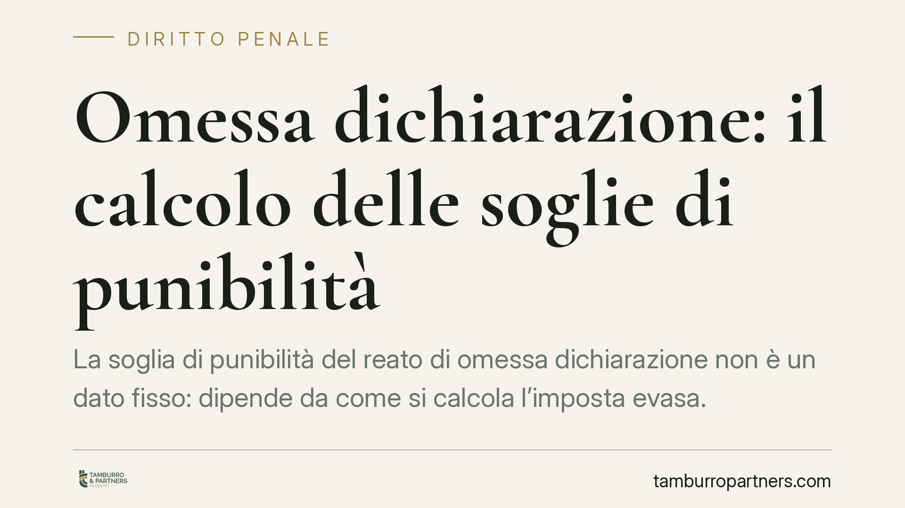

Omessa dichiarazione: il calcolo delle soglie di punibilità
La soglia di punibilità del reato di omessa dichiarazione non è un dato fisso: dipende da come si calcola l'imposta evasa. Un recente orientamento della Cassazione penale ribadisce che i costi d'impresa vanno sottratti solo se effettivi, veritieri e inerenti. Una distinzione decisiva per capire se la contestazione penale regge o meno.

Il fatto e perché conta
Il reato di omessa dichiarazione punisce chi, obbligato a presentare la dichiarazione annuale sui redditi o sull'IVA, non vi provvede entro i termini di legge. Non è però un reato che scatta automaticamente: occorre superare una soglia quantitativa di imposta evasa.
Il punto critico è proprio il calcolo di quell'imposta. Perché l'importo contestato in sede tributaria non coincide necessariamente con quello rilevante ai fini penali. La differenza può spostare la posizione del contribuente dentro o fuori l'area del penalmente rilevante.
Inquadramento normativo
Il reato è previsto dall'art. 5 del D.lgs. 74/2000. Oggi la soglia di punibilità è fissata in 50.000 euro di imposta evasa per ciascuna singola imposta (imposte sui redditi o IVA, considerate separatamente). Sotto quella soglia il fatto non costituisce reato, fermo restando l'illecito amministrativo-tributario.
La nozione di "imposta evasa" è definita dall'art. 1, comma 1, lett. f) del medesimo decreto: è la differenza tra l'imposta effettivamente dovuta e quella indicata in dichiarazione (o, nel caso dell'omessa dichiarazione, quella non dichiarata), al netto delle somme versate a qualsiasi titolo.
Qui entra in gioco il tema dei costi. Per determinare l'imposta effettivamente dovuta non basta considerare i ricavi accertati: occorre sottrarre i costi sostenuti dall'impresa. Ma non tutti i costi sono deducibili in sede penale.
La tripartizione: effettività, veridicità, inerenza
La Cassazione penale valorizza tre requisiti cumulativi che un costo deve possedere per ridurre la base imponibile rilevante ai fini del reato:
- Effettività: il costo deve essere realmente sostenuto, non meramente contabilizzato. Una fattura non equivale di per sé a una spesa esistente.
- Veridicità: l'operazione sottostante deve essere reale, non fittizia o simulata. I costi documentati da operazioni inesistenti non si sottraggono.
- Inerenza: il costo deve essere collegato all'attività d'impresa, non a interessi personali o estranei alla gestione economica.
Solo i costi che superano tutti e tre i filtri abbassano l'imposta evasa e, con essa, la possibilità di superare la soglia di punibilità. È un criterio più rigoroso di quello che talvolta opera in sede fiscale.
Autonomia tra accertamento tributario e giudizio penale
Un passaggio spesso frainteso: il giudice penale non è vincolato all'accertamento dell'Agenzia delle Entrate. L'imposta evasa va ricostruita autonomamente nel processo penale, secondo le regole probatorie proprie di quella sede.
Significa che un importo definito in sede tributaria può essere rideterminato dal giudice penale, al rialzo o al ribasso. Un contribuente può aver chiuso una lite fiscale su cifre elevate e vedersi comunque assolto in sede penale, se i costi sottratti risultano effettivi, veri e inerenti. Vale anche il contrario.
Questa autonomia impone di non gestire il fronte tributario e quello penale come compartimenti separati. Le scelte fatte davanti all'ufficio possono avere ricadute nel processo, e viceversa.
Implicazioni pratiche
Per l'imprenditore e il professionista destinatario di una contestazione ex art. 5, la partita si gioca sulla documentazione. Dimostrare l'effettività e l'inerenza dei costi può ridurre l'imposta evasa sotto i 50.000 euro e far venire meno il reato.
Al contrario, costi solo formalmente documentati ma non provabili nella loro realtà economica rischiano di essere ignorati dal giudice penale, con un'imposta evasa più alta di quella attesa.
Cosa fare in concreto
- Ricostruisci la posizione per singola imposta: verifica separatamente l'imposta evasa sui redditi e quella IVA, perché la soglia dei 50.000 euro si valuta per ciascuna.
- Raccogli la prova dei costi: conserva contratti, pagamenti tracciati, corrispondenza e documentazione che attesti effettività, veridicità e inerenza di ogni spesa rilevante.
- Non affidarti al solo dato tributario: considera che il giudice penale può ricalcolare l'imposta evasa in autonomia rispetto all'accertamento fiscale.
- Coordina difesa tributaria e penale: valuta le scelte sui due fronti in modo unitario, perché interagiscono.
- Attivati per tempo: una consulenza nella fase dell'accertamento, prima della contestazione penale, consente di impostare correttamente la ricostruzione dei costi.
---
Contributo informativo a cura di Tamburro & Partners Avvocati - Avv. Giuseppe Tamburro. Non costituisce parere legale.
Ogni condominio ha una storia a sé.
Se gestisci un'amministrazione e vuoi un confronto su una specifica questione condominiale, scrivi allo studio. Ti rispondiamo entro un giorno lavorativo.